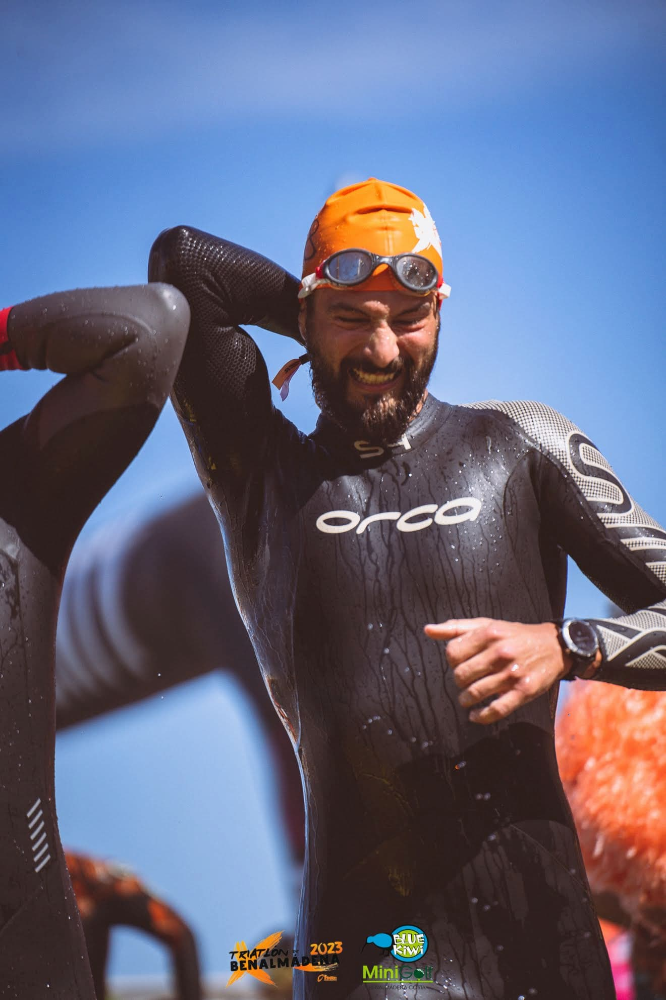
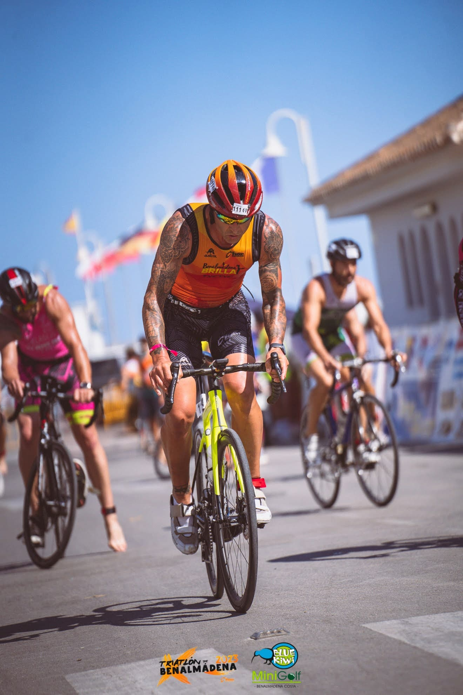
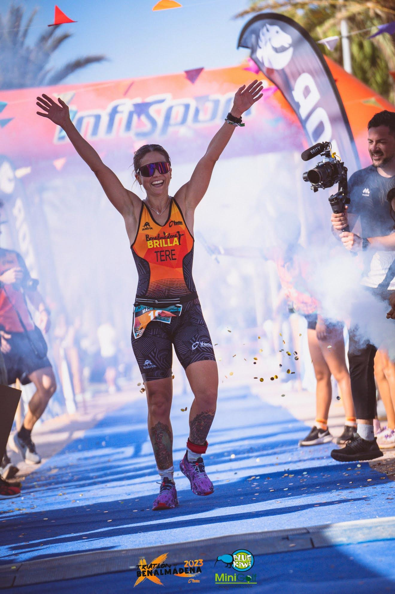

Natación
El inicio de la prueba (Hora por determinar) se realiza desde la playa de mala pesquera dirección el puerto donde se efectuará la salida del agua hacia la T1.
Fecha pendiente de confirmar
Nadar
750 metros
Ciclismo
20km
Carrera
5Km
El inicio de la prueba (Hora por determinar) se realiza desde la playa de mala pesquera dirección el puerto donde se efectuará la salida del agua hacia la T1.
A continuación, los triátletas realizarán 20 kilómetros en dos vueltas donde podrán disfrutar de un enclave único como es la costa benalmadense y de la pequeña pero picante subida al parque de la paloma. En el segunda vuelta se dirigiran al puerto de nuevo encontrarán la T2 para dar comiendo la carrera a pie.
Para terminar la prueba, 5 kilómetros de carrera a pie por Puerto marina, disfrutando de nuevo de esa brisa marina tan particular de Benalmádena. Donde al final los corredores se dirigirán a la meta.